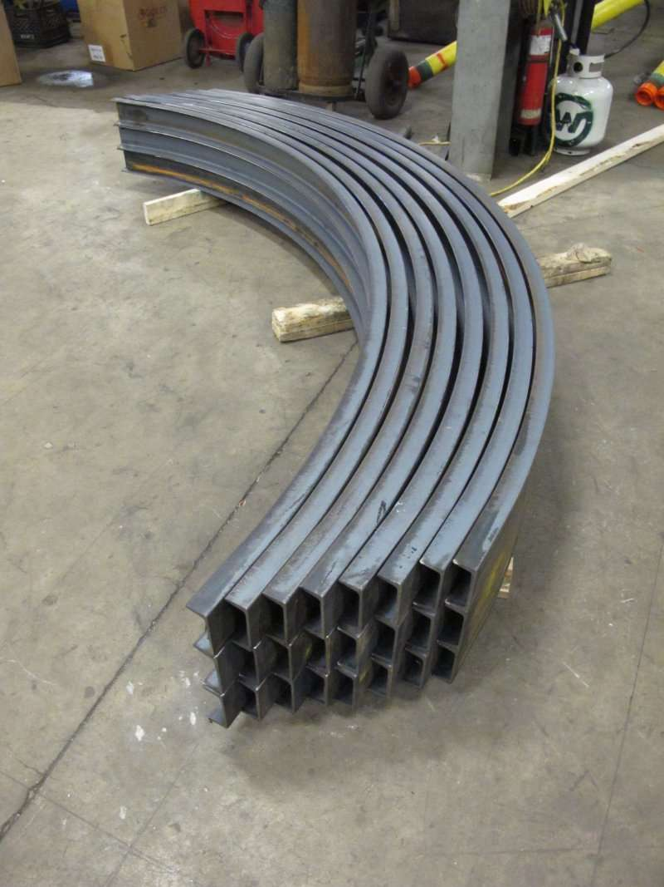

The latest at Compass Bending
Industry insights, technical guides, and company updates from the Compass Bending team.

A breakdown of the roll bending process and where it excels. Learn about the capabilities, materials, and applications that make roll bending an ideal choice for large-radius curves and complex geometries.
March 2026
How precision bending supports critical infrastructure projects in the oil and gas industry. From pipeline systems to drilling equipment, discover the specialized solutions Compass Bending provides.
February 2026
Comparing roll bending, draw bending, compression bending, and induction bending. Each method has unique advantages depending on your material, profile, radius requirements, and project timeline.
January 2026
More often than not, customers inquire about hot bending processes. Oftentimes, it's not actually needed to meet specifications. We're here to discuss why cold bending might be the better solution for your project.
December 2025
Explore how Compass Bending ensures every project meets the highest quality standards. From material testing to final inspections, learn about our comprehensive quality assurance processes and certifications.
November 2025
Walk through our process from initial consultation to final delivery. Learn how we transform your specifications into precision-bent metal components and how we ensure on-time, reliable delivery to your location.
October 2025